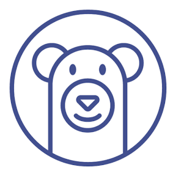

業務影響を分ける
止められない機能、後回しにできる機能、属人化している作業を切り分けます。
Why ClavisFlow
止められない機能、後回しにできる機能、属人化している作業を切り分けます。
保守期限、認証、データ構造、連携先、開発環境の再現性を点検します。
全面刷新だけでなく、分離、置換、API化、自動化など現実的な順番を提案します。
Approach
利用者、頻度、障害履歴、担当者、外部連携を短時間で把握します。
保守不能化、セキュリティ、運用品質、データ退避難度を評価します。
費用対効果と業務停止リスクを見ながら、着手順と検証方法を整理します。
Use Cases
Windowsデスクトップ、Excel/VBA、Access、古いWebシステム、担当者しか触れない社内ツールなど、 「今は動いているが、次の変更が怖い」状態を扱います。
Experience & Skills
長年運用されてきたシステムの調査・改修を中心に、ログ解析、SQL、コード解析、仕様整理、移行設計まで幅広く支援します。

Free Diagnosis
いくつかの質問に答えると、リスク傾向と相談時に共有しやすい要点をその場でまとめます。
ソースコードの一部、テーブル定義書、画面仕様、エラーログなどを共有いただければ、 より踏み込んだリスク診断や改善の方向性をテキストで整理してお送りします。
フォーム入力後、ここに優先度と次の一手が表示されます。
まずは「ここが気になる」だけでも大丈夫です。
対応するのは、既存システムの調査・改修を長く見てきたエンジニアです。 仕様書がない、前任者に聞けない、状況をうまく説明できない場合も、断片的な情報から一緒に整理します。